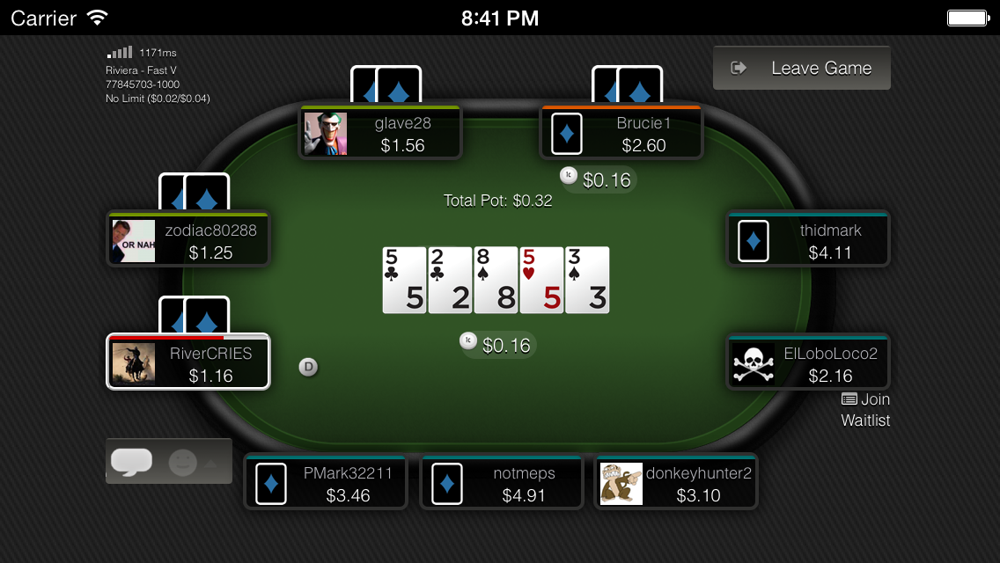
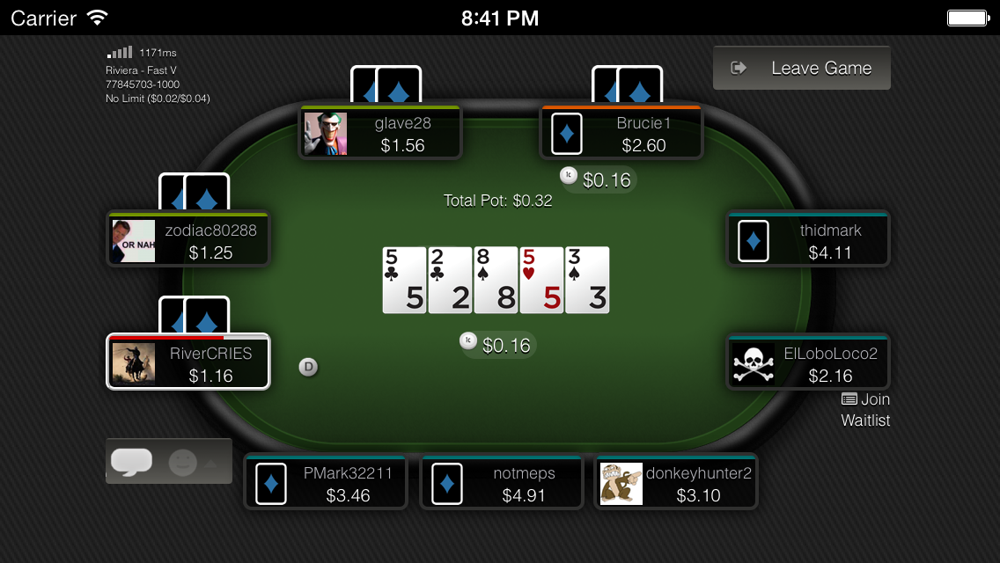
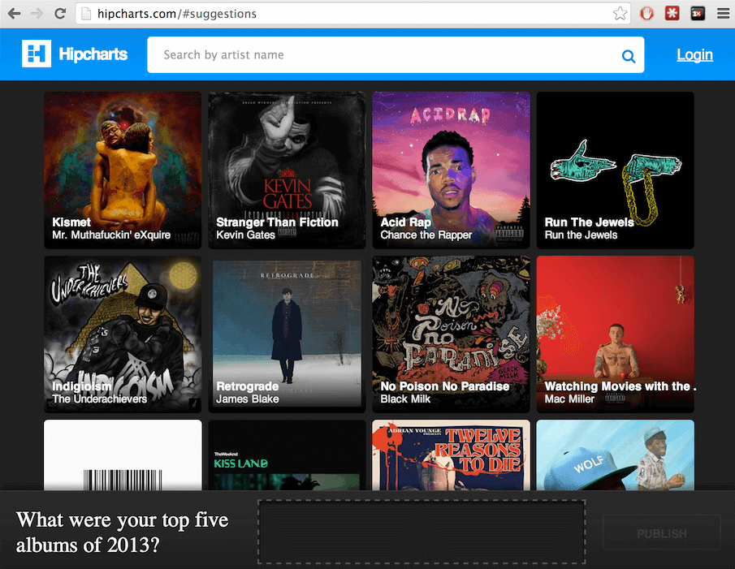
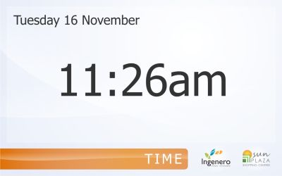
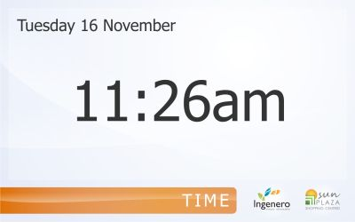

Hi there! I build high-performance web applications.
I'm an Aussie web developer based in Brisbane. I have a Software Engineering degree, and more importantly, about 10 years of industry experience.
{kind=link}
I specialise in CoffeeScript & NodeJS development, but also have experience with a wide range of technologies, and always love to learn new ones.
Links to Github and Stackoverflow profiles below. To contact, please email me.
Employment
- more info...2012 - Present: Codeworx. Web Programmer (Node JS, Coffeescript)
Since mid 2012 I have been working full time for Codeworx, producing a mobile web client for their Poker network. The client is a single-page application that communicates in real time directly with the game servers using web sockets. Performance is of utmost importance.
Project uses: Coffeescript, NodeJS, Socket IO, Browserify, Mocha, Jade
- more info...2012: Digicon. Web Programmer (JS, .NET)
Corporate-level websites, intranets and apps. ASP .NET, C#, IIS, Responsive Design, Backbone JS, Underscore JS, Sitecore, Orchard CMS, MongoDB.
- more info...2011: Open Platform. Front-end web developer (HTML,CSS,JS)
Edinburgh .NET software house. Corporate-level web tools for big financial insitutions and similar types of clients. Their software is very high quality. Since being here I've brushed up a little on my C# and SVN, got familiar with .NET MVC & IIS but mainly focused on creating the front-end of their new website, using jQuery and CSS3.
- more info...2010 - 2011: Self Employed. Freelance web and application developer.
One year working primarily through oDesk. Mostly 2-3 major projects and about 8-10 smaller, shorter ones. Almost all web applications.
- more info...2006 - 2010: Kintek.com.au. Production Manager, Software Engineer
When I joined Kintek there were only two staff members (my bosses). They treated me extremely well, and taught me how to produce professional websites. The company has since grown to about 10 employees, and now specialises in making highly advanced web applications. It's cutting edge stuff, with a team that loves it and I count myself lucky to have been a part of it. It was been during my time at Kintek that I developed a real passion for Software Development, and the web as a platform.
- more info...2008 - 2009: University of Queensland. Tutor (Web Information Systems)
At University I worked as a tutor for a third year Web Information Systems course (INFS3202), and even received a tutoring excellence award which I was pretty proud of. The course covered topics such as HTML, CSS, Javascript, PHP, JSP, Oracle, MySQL and making basic web apps. It was a relatively easy subject for a lot of students but I believed it was a good, practical course unlike a lot of the other subjects I took.
- more info...2001 - 2005: Daily Mercury. IT Support
During high school and university holidays I worked as a trainee to the systems administrator of a local newspaper of about 100 staff. I really enjoyed this job. Here is a reference. My main role was to provide technical support to the staff. My boss, the sysadmin was a real pro and I learned plenty about troubleshooting, networking and computer hardware. I also gained a bit of insight into the print industry.
Mad Skills
I love learning new technologies and programming languages. However, these ones are my favourites, and the ones I consider myself most skilled with. Left to my own devices, I will usually choose these technologies for new projects:
- Javascript / Coffeescript
- NodeJS & NPM
- Express, Socket IO, Browserify, Jade, Socketstream, async
- Backbone & Underscore JS
- Git, Gitflow, Semantic Versioning
- Mocha, Should, JSDom, Phantom
- jQuery
- MongoDB, Redis
- Grunt
- Vagrant
- Google Maps API
- Stylus
- Sublime Text
- Bash
Software I couldn't live without:
- Google Chrome, & Canary
- Google Apps (Search, Mail, Drive, Maps, Calendar)
- Sublime Text 2
- Github & SourceTree
- Spotify
- Stack Overflow
- Trello
- OSX
Technologies which I have plenty of experience with (+5 years), but am not currently using:
- PHP 5.3, Symfony, Doctrine, Zend Framework
- MySQL & Navicat
- Apache
- ASP .NET (C#)
- Microsoft Windows, IIS, SQL Server, Visual Studio 2010
- Mercurial (HG), Subversion (SVN)
- Java & JSP
- LESS & SASS
- Photoshop, Gimp
- Fogbugz, Kiln, JIRA, Bitbucket
- Heroku, Appfog, cPanel, WHM, Nodejitsu
Looking forward to experimenting with
- Angular JS, React JS
- Harmony / ECMAScript6
- Meteor, Sails, Brunch, Marionette
- PHP5.5, Symfony2, Composer, Lavarel
- PhoneGap / Cordova
- Docker / Dokku / Digital Ocean
- Swift
- Go
Portfolio
- Merge Gaming - Web Poker Client more info...
Since mid 2012 I have been working full time for Codeworx, producing a mobile web client for their Poker network.
Project uses: Coffeescript, NodeJS, Web Sockets, Browserify, Mocha, Jade, Stylus

 
 - Swapsies & Hipchartsmore info...
Weekend projects for experimenting with new technology. Designed by a mate of mine, Jason Corbett
Projects use: Coffeescript, NodeJS, Socketsteam, Mocha, Jade, Livereload

- CIO Agencymore info...
A small functional prototype
Project uses: Coffeescript, NodeJS, Browserify. Trello for project management.

- Open Platform more info...
For a few months while living in Edinburgh I worked for a .NET agency (see Employment for more details). One of the projects I worked on during that time was a redevelopment of their own site.

- Winning Games: Wickets, Nations & States Card Games more info...In 2011 I assisted a small Australian business called Winning Games to make their card games into web-based apps. They include multiplayer, mini games, thousands of cards and have been implemented as Facebook Apps and Chrome Web Store apps.Technologies used: PHP, MySQL, Symfony, Javascript, Google Maps APIs.
http://www.playwickets.com/
http://www.leadnations.com/
http://www.playstates.com/ - CabakMon Digital Signage more info...This was a pretty interesting project that involved interfacing with a few different systems. The result was a slideshow that appeared on an array of large-screen televisions in a local shopping center. On the slides were real-time weather information and energy consumption information that was fetched dynamically from sensors on the solar panels on the roof of the shopping center.Technologies used: PHP, Zend_RSS, GD2, SQL Server, IIS.


 
 - Vesox.com Domain Generator more info...A very small tool for a client I started with recently - generates "random" domains for prospective hosting customers, and checks their availability.
Technologies used: PHP, Symfony, MySQL - Work Experience Directory more info...One of the first projects I took on as a freelancer, involved creating a simple job-search type website, but targeted specifically at Australian high school students looking for work experience placements.

- STK Newsletter Template more info...A very simple newsletter template. Sliced from PSD to HTML+CSS

Prior to 2010 I worked for an agency, so I can't claim any of their sites or apps as purely my own work. Head over to kintek.com.au to see the sites we developed as a team between 2006 and 2010. My main role was backend and frontend programming, so I also can't take any credit for any of their beautiful designs! =)
Let's get to know each other
As do most people, I love music. Rock, Folk, Roots, Reggae, Dub, Drum n Bass, Breakbeats, Hip Hop, Funk, Jazz, Soul, Classical.... soooo much good music in the world, and not nearly enough time to listen to it all. If I can wear a pair of good headphones while working, I'm a happy man. Festivals and concerts are definitely my social outing of choice.
Travel is another of my passions. So far I've had the good fortune to see a bit of South East Asia, Europe, the United States, Fiji, and a lot of Australia.
Being a self confessed nerd, I read a lot. Mostly science novels - both fiction and non-fiction. I'm particularly interested in Artificial Intelligence, Human Consciousness, Evolution and Information Security.
What else? Espresso, red wine, IPA, friends, family, nature, cooking, cycling, sleeping, hanging out with my dog, watching "The Wire". Usual stuff.
Just don't ask me about sport. I have trouble describing the difference between cricket and football. Subjects that leave me equally perplexed are politics, finance, Twitter and current-affair tv shows.
Code Samples
See below for publicly accesisble code snippets (gists).
More comprehensive or specific code samples can be provided on request.
- Loading Gists...